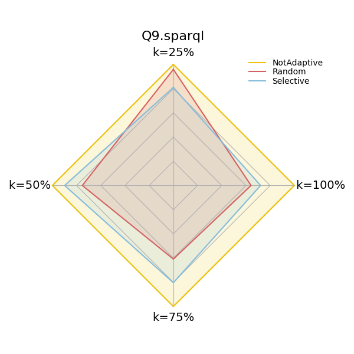

Note
Click here to download the full example code
4.6. Measuring dief@t at Different Answer Completeness Percentages
Experiment 2 in [1] compares the performance of the three variants of nLDE when producing different answer completeness percentages (25%, 50%, 75%, 100%) using dief@k.
The method diefpy.continuous_efficiency_with_diefk computes the dief@k metric for the previously
mentioned answer completeness percentages.
import diefpy
COLORS = ["#ECC30B", "#D56062", "#84BCDA"]
# Load the answer trace file with the query traces from FigShare.
traces = diefpy.load_trace("https://ndownloader.figshare.com/files/9625852")
# Compute dief@k for 25%, 50%, 75%, and 100% answer completeness
exp2 = diefpy.continuous_efficiency_with_diefk(traces)
Create radar plot to compare the performance of the approaches with dief@k at different answer completeness percentages (25%, 50%, 75%, 100%). Plot interpretation: Lower is better.
Conclusion: For Q9.sparql, the variants nLDE Random and Not Adaptive exhibit similar values of
dief@k while producing the first 25% of the answers. However, when looking at dief@k at 100%, we can
conclude that once nlDE Random starts producing answers, it produces all the answers at a faster rate.
This can be observed in the answer trace plot, where the trace for nLDE Random (red line) has a higher slope
over time than the other approaches.
Total running time of the script: ( 0 minutes 21.312 seconds)